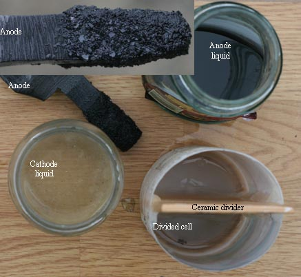

|

A small divided cell was set up in see if Perchlorate could be made using a divided cell as per the patent. The CD on Anode was approx.60mA per square cm. Total current into cell was one Amp. The cell held 2 X 160ml. The divider was made from a ceramic tile that had its glaze removed using an 'Angle Grinder'. It was approx. 3mm thick and siliconed into the cell so that is was water tight. It was soaked with Chlorate solution by filling one half of the cell and leaving it sit for approx. 3 hours. Solution was dreeping through the tile from then on. Cathode was Stainless Steel. The cell was kept cool by placing it in a container of water. The electrolyte consisted of 700 grams per litre Chlorate. The Voltage across the cell at the start was 5 Volts. The cell was ran for approx. 8 hours. The cell Voltage began to rise at that stage and after 12 hours it was taking 20 Volts to drive the one Amp though the cell. Most (17V) of the Voltage was appearing across the tile which seems to be getting 'bunged up'. Black colour began to appear in the Anode compartment soon after the cell was started up. The picture shows the cell and contents after 12 hours (end of run). Very little Perchlorate was deemed to have formed when using Methylene blue to test for Perchlorate concentration. The pH of the Anode and Cathode compartments were 1 and 14 respectively. Chlorate precipitate out in the Anode compartment and on the Anode (due to the very low pH, I presume?). Some Chlorate precipitated out in the Cathode compartment too. When the Chlorate was scraped off the Anode, lots of Anode erosion was evident. |
The cell was started up again with fresh electrolyte of approx. 400 grams per litre Sodium Chlorate. Water was put into one half of the cell for a few hours before hand to 'unbung' the ceramic divider. Current into the cell was one Amp (same as last time) and the Voltage across the cell was higher at 5.5 Volts at the beginning of the run. Crystals of Chlorate did not accumulate on the Anode as rapidly as last time but after a few hours they started to appear. After approx. 9 hours the Voltage had risen to 7.7 Volts. The erosion of the Graphite was evident from the colour of the solution and lots of Oxygen was leaving it's surface (Oxygen evolution). After 24 hours operation the Voltage had stabilized at about 11 Volts. The layer of Chlorate crystals on the Graphite did not get very thick but the Graphite was worn away at the usual high rate. After approx. 36 hours the divider 'bunged up' and the Voltage across the divider rose to approx. 17 Volts. At this stage the Graphite Anode was 70% eaten away. Very little (if any) Perchlorate was made as there was a large amount of Oxygen generated at the Graphite Anode.
The cell is a hopeless Perchlorate maker IMO
HIT THE BACK BUTTON ON YOUR BROWSER